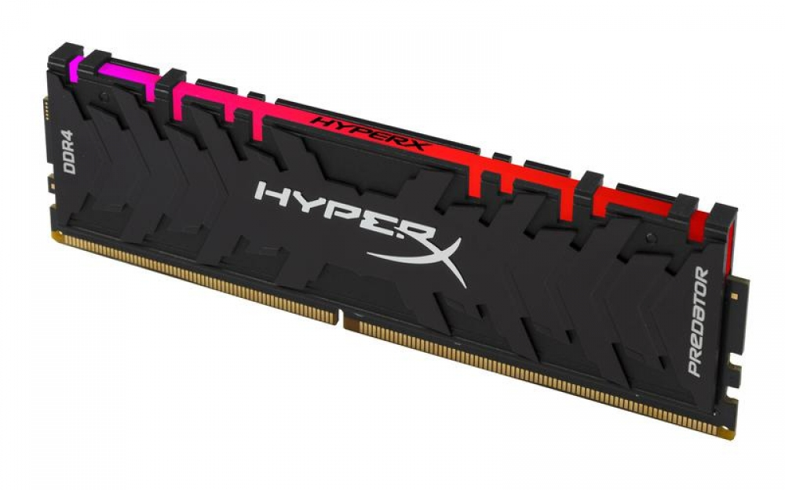
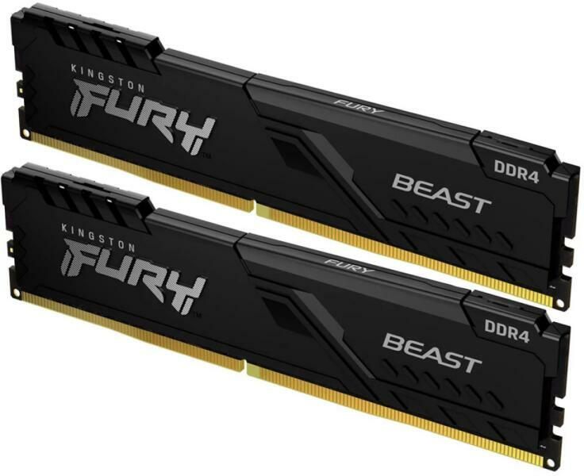

Ramok
Kingston HyperX Predator

Műszaki előírások
RAM memória típusa: DDR4
RAM kapacitás: 8 GB
RAM rendeltetési hely: Asztali számítógép
Frekvencia (MHz): 3200 MHz
Késleltetés: CL 16
Feszültség: 1,35 V
Leírás:
Kingston RAM, HyperX Predator, DIMM, DDR4, 16 GB, 3200 MHz, CL16, készlet 2x8 GB, 1,35 V, RGB világítás, radiátor
Adjon HyperX Predator DDR4 RGB memóriát rendszerének. A HyperX Predator hűt, miközben jól néz ki a hűtőbordának köszönhetően. Növelje a képkockasebességet, tartsa fenn a zökkenőmentes adatfolyamot akár 4000 MHz-es frekvenciákkal és alacsony késleltetésű CL15-CL19-vel.
RGB effektusok
Szerelje fel rendszerét nagy teljesítményű memóriával és RGB világítással.
Alumínium hűtőborda
A fekete radiátort úgy tervezték, hogy minden rendszerhez illeszkedjen.
Intel XMP
A legújabb Intel platformokhoz optimalizált profilok.
Kingston FURY Beast Black

Műszaki előírások
RAM memória típusa: DDR4
Ram kapacitása: 8 GB
RAM rendeltetési hely: Asztali számítógép
Frekvencia (MHz): 3200 MHz
Késleltetés: CL 16
Feszültség: 1,35 V
Leírás:
RAM memória - 1x8GB, PC4-25600, 16-18-18 CL, feszültség: 1,35 V, passzív hűtés, XMP 2,0 és Single Rank
A(z) Kingston kifejlesztett egy teljesen új DIMM típusú memóriaegységet, amelyet kimondottan a komolyabb teljesítményű PC-khez hoztak létre. A(z) Kingston FURY 8GB DDR4 3200MHz CL16 Beast Black memória a következő típusú foglalatba illik: DDR4. A RAM kapacitása 8 GB. A passzív hűtés szavatolja az üzemi hőmérséklet szinten tartását. Az igényesebb felhasználók annak is örülhetnek, hogy a rendszermemória paraméterei a BIOS-ban tetszés szerint változtathatók. A(z) Kingston memória modul főbb tulajdonságai 3200 MHz -es frekvenciája és CL 16 latenciája.